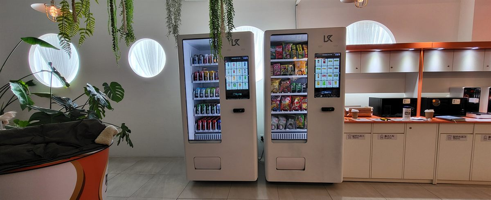

아파트 커뮤니티센터는 손님이 아니라 주민이 쓰는 공간입니다. 그래서 상가에 놓는 자판기와 계산이 다릅니다. 지나가다 눈에 띄어 사는 것이 아니라, 운동하러 가고 아이를 데리러 가는 정해진 걸음 위에 놓여야 팔립니다. 이번 현장은 피트니스룸과 독서실, 작은 도서관이 한 층에 모여 있고 그 앞에 라운지가 있는 구조였습니다. 자리를 찾는 일이 곧 그 층에서 사람이 가장 자주 멈추는 지점을 찾는 일이었습니다.
먼저 본 것은 동선이 겹치는 곳이었습니다. 라운지 안쪽 구석은 조용하지만 일부러 찾아가야 하는 자리라 뺐습니다. 대신 엘리베이터에서 내려 운동실로 들어가는 길목이면서, 셀프 커피 코너와 분리수거함이 이미 놓여 있는 벽면을 잡았습니다. 주민들이 이미 걸음을 멈추는 자리라 따로 알릴 필요가 없습니다. 다음이 전원이었습니다. 라운지 콘센트는 청소와 조명을 기준으로 잡혀 있어 냉장 압축기 두 대를 종일 돌리기에는 여유가 빠듯합니다. 관리사무소와 도면을 함께 보고 공용부 별도 회로를 확인한 뒤 진행했습니다. 마지막은 수평입니다. 커뮤니티센터 바닥은 대개 큰 타일이라 평평해 보여도 줄눈을 지나며 조금씩 기울어 있습니다. 두 대를 나란히 놓을 때는 각각 수평을 잡고, 기계 사이 간격과 윗선까지 맞춰야 보기에 흐트러지지 않습니다.
송도 아파트 커뮤니티센터에 맞는 구성
기계는 두 대를 나눠 놓았습니다. 한 대는 생수·탄산·이온음료·캔커피를 넣은 냉장 음료 자판기, 다른 한 대는 과자·빵·젤리·단백질바를 넣은 간식 자판기입니다. 한 대에 음료와 간식을 섞으면 칸이 모자라 어느 쪽이든 자주 비게 되는데, 커뮤니티센터는 음료와 간식을 찾는 사람이 아예 다릅니다. 운동을 마친 사람은 물과 이온음료를, 독서실에 있던 학생은 간식을 찾습니다. 따로 두면 채우러 갈 때도 어느 쪽만 손대면 되는지가 분명해집니다.
품목은 시설 운영 시간에 맞췄습니다. 커뮤니티센터는 이른 아침 운동, 낮 시간의 프로그램, 저녁 퇴근 후와 학원 끝난 시간까지 사람이 세 번 몰립니다. 그래서 생수와 이온음료 칸을 가장 넓게 잡고, 저녁 시간대를 위한 간식을 그다음으로 뒀습니다. 주민 시설이라 주말이 오히려 평일보다 붐빈다는 점도 상가와 다릅니다. 결제는 카드와 삼성페이·카카오페이·네이버페이를 받게 하고 현금함은 넣지 않았습니다. 운동복 차림으로 나오는 자리라 현금을 들고 오는 사람이 거의 없고, 현금함이 없으면 수금하러 갈 일도 사라집니다. 재고와 시간대별 판매는 휴대폰 앱으로 봅니다. 며칠이면 어느 칸이 먼저 비는지 눈에 보이니, 그때 칸 배분을 한 번 더 조정하시면 됩니다.
커뮤니티센터 자판기, 좋은 점과 어려운 점
좋은 점은 이용하는 사람이 정해져 있다는 것입니다. 단지 주민이라 얼굴이 바뀌지 않고, 요일과 시간대별 판매가 규칙적으로 나옵니다. 며칠만 지나면 언제 채우러 가야 하는지 감이 잡혀 헛걸음이 줄어듭니다. 실내라 기계가 상하지 않는 것도 큽니다. 비바람과 직사광선을 타지 않고, 출입카드가 있어야 들어오는 공간이라 파손이나 도난 걱정이 거의 없습니다. 주말이 살아 있는 것도 장점입니다. 사무실 건물은 주말에 비지만 주민 시설은 반대라, 한 주가 고르게 채워집니다.
어려운 점도 그대로 적겠습니다. 첫째는 동의를 받는 절차입니다. 커뮤니티센터는 공용부라 입주자대표회의나 관리주체의 동의가 있어야 합니다. 어디에 놓을지, 전기를 어디서 끌지, 수익을 어떻게 볼지까지 정해야 해서 설치 자체보다 이 과정이 더 오래 걸리는 경우가 많습니다. 둘째는 한계가 분명하다는 점입니다. 단지 세대 수가 정해져 있어 아무리 잘 돼도 그 이상은 올라가지 않습니다. 욕심내어 큰 기계를 여러 대 넣기보다 자리 수를 늘리는 쪽이 맞습니다. 셋째는 민원입니다. 주민이 매일 보는 공간이라 쓰레기와 청소에 예민합니다. 옆에 분리수거함이 이미 있는 자리를 고른 것도 그래서였고, 냄새가 남는 품목은 넣지 않았습니다. 넷째는 소음입니다. 라운지는 조용해서 냉장 압축기 소리가 생각보다 크게 들립니다. 독서실 출입문 바로 옆은 피해야 하고, 이번에도 그래서 반대쪽 벽면을 골랐습니다.
송도 무인매장, 이런 자리가 잘 됩니다
송도국제도시는 인천경제자유구역으로 계획해 지은 구역이라 다른 동네와 성격이 뚜렷하게 다릅니다. 첫째로 아파트가 대단지 고층 위주입니다. 대부분의 단지에 커뮤니티센터가 있고, 피트니스룸·독서실·작은 도서관 같은 시설이 한 건물에 모여 있어 주민이 매일 같은 층을 지나는 구조가 이미 만들어져 있습니다. 둘째로 업무·연구 시설이 넓게 퍼져 있습니다. 국제업무단지와 지식정보산업단지 일대에 오피스 빌딩과 연구소가 있고, 포스코타워송도처럼 층수가 높은 건물은 한 건물에 여러 대를 놓는 상담이 자주 나옵니다.
셋째로 학교와 학원이 많습니다. 인천대학교 송도캠퍼스와 연세대학교 국제캠퍼스가 있어 대학 주변 상권이 따로 서 있고, 송도 전역의 학원가에는 스터디카페와 독서실이 촘촘합니다. 넷째로 사람이 몰리는 지점이 분명합니다. 센트럴파크와 송도컨벤시아, 트리플스트리트 일대는 주말과 행사 기간에 사람 수가 크게 달라져, 실내 대기 공간이 있는 건물이면 대부분 자리가 나옵니다. 인천 1호선 인천대입구역·센트럴파크역·국제업무지구역·지식정보단지역·캠퍼스타운역을 따라 상가가 이어져 있어, 역에서 걸어 들어가는 길의 근린상가도 문의가 꾸준한 구역입니다.
송도 서비스 지역
연수구 — 송도1동 · 송도2동 · 송도3동 · 송도4동 · 송도5동 · 연수1동 · 연수2동 · 연수3동 · 청학동 · 동춘1동 · 동춘2동 · 동춘3동 · 옥련1동 · 옥련2동 · 선학동
송도 안 — 국제업무단지 · 지식정보산업단지 · 첨단산업클러스터 · 바이오단지 · 송도테크노파크 · 커낼워크 일대
역 — 인천대입구역 · 센트럴파크역 · 국제업무지구역 · 지식정보단지역 · 테크노파크역 · 캠퍼스타운역 · 동막역 · 원인재역
주요 시설 — 송도컨벤시아 · 센트럴파크 · 포스코타워송도 · 인천대학교 송도캠퍼스 · 연세대학교 국제캠퍼스 · 트리플스트리트
인접 — 남동구 논현동 · 고잔동 · 구월동 · 미추홀구 학익동 · 용현동 · 남동국가산업단지
인천 전역(중구 · 동구 · 미추홀구 · 남동구 · 부평구 · 계양구 · 서구)과 경기 시흥 · 안산까지 같은 조건으로 나갑니다.
송도 무인창업, 이렇게 시작하시면 됩니다
설치비는 받지 않습니다. 자리 확인부터 품목 구성, 기계 반입, 카드 결제 연동, 재고 채우는 방법까지 한 번에 안내해 드립니다. 아파트 커뮤니티센터나 업무용 빌딩처럼 공용부에 놓는 자리는 관리사무소와 먼저 이야기해야 하므로, 동의를 받는 데 필요한 자료를 저희가 정리해 드립니다. 견적 전에 확인하는 것은 전기 회로·벽면 폭·엘리베이터와 출입문 폭 세 가지입니다. 송도는 고층 건물이 많아 화물용 승강기 운행 시간이 정해져 있는 경우가 있고, 이 확인이 빠지면 설치 당일에 일이 멈춥니다. 자리 사진 한 장과 대략의 벽면 폭만 보내 주셔도 들어갈지 아닐지는 미리 봐 드립니다.
비용은 구입이 렌탈보다 유리한 편입니다. 렌탈료를 몇 년 내는 것보다 처음에 사 두는 쪽이 총액이 낮게 나오는 경우가 많고, 오래 쓸수록 차이가 벌어집니다. 이번처럼 두 대를 함께 놓는 경우라면 차이가 더 커집니다. 구성별 36개월 총비용은 구입 vs 렌탈 비교 가이드에 정리해 두었습니다.
송도 무인자판기 설치 상담
세워 둘 자리 사진 한 장만 보내 주셔도 됩니다. 남는 벽과 전기 회로, 반입 경로를 보고 들어갈 수 있는 크기와 대수를 먼저 봐 드린 뒤 견적을 보내 드립니다.
※ 사진은 픽포스가 시공한 설치 사례이며, 글에 적힌 지역의 현장 사진은 아닙니다. 자판기 구성과 품목은 자리와 업종에 따라 달라지며, 아파트 커뮤니티센터·업무용 빌딩의 공용부 설치는 전기 회로 여유와 반입 경로, 입주자대표회의·관리주체의 동의 조건을 현장에서 먼저 확인합니다. 정확한 금액은 견적서로 안내드립니다.